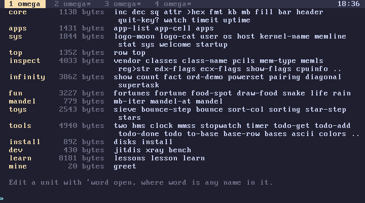
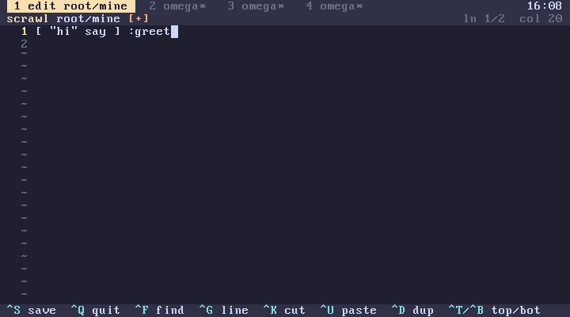

subverge
subvergeUnits
A unit is a named part of root. Root is the code that every tab shares and that survives reboots, and units are how it is organised and edited. Your own words that should be available everywhere belong in a unit of your own.
Listing them
root prints every unit with its size and the words it defines:

A unit marked (draft) has an edit that failed to build and is waiting to be fixed.
Making a unit
"mine" unit
creates an empty unit called mine at the end of root and opens it in scrawl. Write definitions in it the same way as at the prompt, one or more per line:
# greetings
[ "hi" say ] :greet
[ { name } "hi, " name cat say ] :greet-name
Save with Ctrl-S and quit with Ctrl-Q. The unit is built, and greet and greet-name exist in every tab at once. On an installed disk root is saved immediately.

To change it later:
'greet open
opens the unit that defines greet. open accepts any word the unit defines, or the unit's own name as a symbol, so 'mine open works too.
An example: your own logo
A logo has to be visible in tab 1 at boot, which makes it a good first unit:
"mylogo" unit
In scrawl, write:
# my sys logo
[ [ " /\\_/\\" " (o.o)" " > <" ] ] :logo-fox
Save with Ctrl-S and quit with Ctrl-Q. Then 'fox logo switches to it, and on an installed disk the next boot draws it too, since both the unit and the logo name are saved.
Rules for names
Unit names are 1 to 20 characters long and use only lowercase letters, digits and -. They have to be unique. Root holds at most 32 units, including the 13 that come with Subverge.
Writing a unit
A unit's source runs once, from top to bottom, every time root is built. It should consist of definitions. A unit can also compute values at build time:
0 100 range [ sq ] map :squares
builds the list once, and squares then pushes it. Anything left on the stack at the end of a unit is thrown away.
A unit sees every word defined in units before it, and every built-in. It doesn't see definitions made at a tab's prompt, since root is built outside any one tab's world.
Comments are kept, since a unit is stored as the text you wrote. This is the main difference from 'name edit, which stores a parsed quote.
Order and overriding
Units are built in order, and each one's definitions go on top of everything before it. When two units define the same word, the later one wins for code that runs after root is built. Code inside the earlier unit that was already defined keeps referring to the word by name, so it also sees the later definition when it runs.
A new unit is always added at the end. That means it can use every other unit, and editing it only rebuilds that one unit, which is fast and can't break the units before it.
Defining a word that is also a built-in prints shadows: and the name in orange after the build. The new definition replaces the built-in in every tab, including inside other root code, so this is rarely what you want.
Removing a unit
Units can't be removed or reordered from inside Subverge. To retire one, open it and delete its contents, leaving an empty unit that defines nothing. To remove or reorder units for good, change the files in root/ in the source tree and rebuild the kernel (development).
Tab definitions or a unit
| Tab definition | Unit | |
|---|---|---|
| visible in | one tab | all four |
| made with | :name at the prompt, 'name edit |
"name" unit, 'name open |
| undone by | back |
editing it again |
| comments | lost | kept |
| failure | the line is undone | root is unchanged, the edit becomes a draft |
A tab definition with the same name as a root word hides it in that tab only (names). This is a safe way to try a change before putting it in a unit.
A program listed in apps should be in a unit, along with its entry in the apps list.